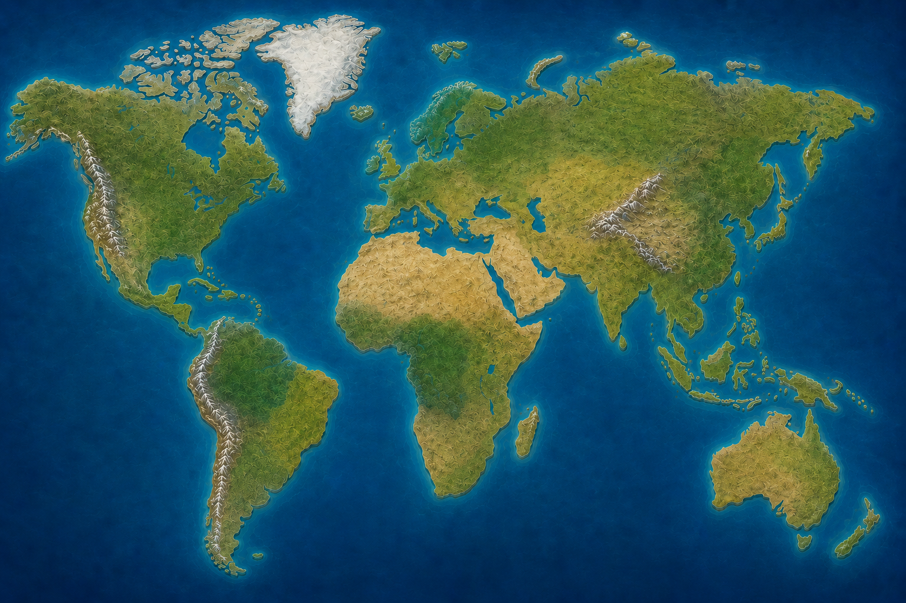

0
КИБЕР-КОРАЛЛ
Выбери сторону
Выбор повлияет на цвета сети и сторону, за которую ты играешь
Тапай по узлу
чтобы расти
чтобы расти
👇
Тапай по узлу — копи Влияние
Карта мира
Выберите континент
Тапни по сети, чтобы разместить узел

0
Заражено
0
Городов
0%
Мир
Узел установлен
Китай
Уровень: 1
Заражено
1,247
Скорость
+12%
Регионы
1
Разрушение
0.1%
УРОВЕНЬ 1
Охват
10%
Давление
5%
Разрушение
1%
Сводки из мира
Заразите хотя бы один регион, чтобы получать новости.
Пригласи друга
«» открывается за приглашение друга.
Поделись ссылкой ниже — после того как друг присоединится,
способ станет доступен.
…
Распространение